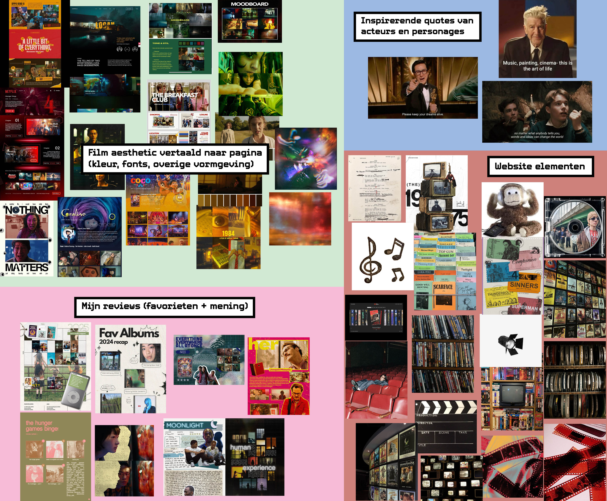

class: center, middle <!-- In deze textarea kan je in Markdown de slides aanpassen, zie https://github.com/gnab/remark/wiki voor alle mogelijkheden! --> # Inspiratie voor de digital garden van Pascha --- # Agenda 1. Onderwerp 2. 10 links 3. 50 afbeeldingen 4. ...(max 11 slides, 15 totaal) 5. introtekst van max. 180 tekens --- # Onderwerp Waarom is dit onderwerp interessant voor mij? - Ik leer altijd veel van films/series en vind de verhalen interessant - Ik vind het interessant om te leren over hoe films in elkaar zitten en de passende vormgeving - Ik wil in de film industrie werken <img src="imagess/Better Days (2019).jpg" width="350px"> --- # Onderzoek https://www.mdpi.com/2076-328X/10/5/86 https://books.google.nl/books?hl=en&lr=&id=JsXjGTWq4JAC&oi=fnd&pg=PA4&dq=films+aesthetics&ots=udE_1jlGAa&sig=Wz49mni-VxQkt-lFpxofsUT2Uzg&redir_esc=y#v=onepage&q=films%20aesthetics&f=false https://psycnet.apa.org/record/2015-25409-001 --- # Zoek 50 afbeeldingen In deze verzameling laat ik de volgende onderdelen zien: - Vertaling film aesthetic naar pagina -> Als je een film hebt gekozen op de homepagina, wordt de hele pagina omgezet naar de sfeer van die film/serie door middel van kleur, fonts, afbeeldingen en overige grafische elementen. - Inspirerende quotes van acteurs/personages -> lessen van acteurs/personages en waarom de film industry zo belangrijk is. - Mijn reviews -> Wat vind ik van deze films/series en welke lessen heb ik eruit gehaald? Wat zijn de favorieten? - Website elementen -> Welke onderdelen die met film te maken hebben kunnen er op de (home)pagina, zoals film bibliotheek en muziek. <p></p> --- # Introtekst Een interactieve filmcollectie waarin iedere film een eigen visuele wereld krijgt. Met inspirerende quotes, persoonlijke inzichten en de verhalen die mij zijn bijgebleven. <img src="imagess/film_ the grand budapest hotel.jpg" width="500px"> <!-- Laat onderstaande staan anders breekt je presentatie -->